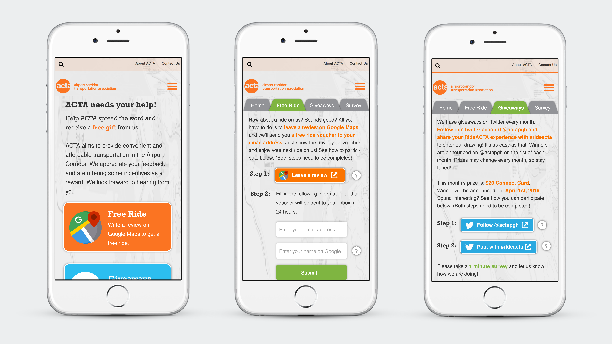

ACTA Mobile Website Design
Resources: Interactive prototype; Design process book.
Overview: This is a consulting project. Our client was Airport Corridor Transportation Association (ACTA). They wanted to increase their exposure and gain more ridership. We decided to develop a mobile website that allowed users to participate in different events - free rides, giveaways, and surveys. In this way, riders would get more involved and help spread the word for ACTA.
Note: For this project, I worked as both project manager and product designer in the team. Because the mobile website was to be incorporated into ACTA's current website, the color scheme and fonts are based on their website.
User research: We interviewed 6 regular riders of public transportation. Feedback from them was written into a report which guided the design process.
Design process: I made nine iterations of screen designs. Each iteration was made based on the feedback from the previous one. We did user testing with 6 users and improved the design based on their testing results and feedback. Our client also helped us make design decisions. For example, I made several homepage designs with different colors, and the client picked their favorite one. The final design was approved by the client and made into a functional website.